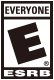

About Ratings and Parental Controls
About Ratings
Sony Interactive Entertainment provides product descriptions and ratings information as a matter of convenience for all users and not as a substitute for parental oversight. Parents are encouraged to review each piece of content prior to purchase or viewing.
Some content has not been rated by any organization. Parents are encouraged to review each piece of content prior to purchase or viewing.
About Game Content Ratings in the Americas, except Brazil
We understand that it can be difficult to tell which games are appropriate for children just by looking at the title. In order to make informed purchase decisions, parents and other consumers should check the rating of video games. The Entertainment Software Rating Board (ESRB) independently applies and enforces ratings adopted by the entertainment software industry.
The ESRB rating system has two parts: rating symbols, which are printed on the front of each PlayStation game box, and content descriptors, which are printed on the back. Rating symbols suggest age appropriateness for the game, and content descriptors indicate elements in a game that may have triggered a particular rating and/or may be of interest or concern.
To take full advantage of the ESRB rating system, it's important to check both the rating symbol (on the front of the game box) and the content descriptors (on the back of the game box).
TITLES RATED EC (Early Childhood) have content that may be suitable for
persons ages 3 and older. Titles in this category contain no material
that parents would find inappropriate.

TITLES RATED E (Everyone) have content that may be suitable for persons
ages 6 and older. Titles in this category may contain minimal cartoon,
fantasy or mild violence and/or infrequent use of mild language.
TITLES RATED E10+ (Everyone 10 and older) have content that may be
suitable for persons ages 10 and older. Titles in this category may
contain more cartoon, fantasy or mild violence, mild language, and/or
minimal suggestive themes.
TITLES RATED T (Teen) have content that may be suitable for persons ages
13 and older. Titles in this category may contain violence, suggestive
themes, crude humor, minimal blood and/or infrequent use of strong
language.
TITLES RATED M (Mature) have content that may be suitable for persons 17
years and older. Titles in this category may contain violence, blood
and gore, sexual content, and/or strong language.
Adults Only or AO ratings are rare. PlayStation does not publish Adults Only games.
ESRB Content Descriptors
Content descriptors are short, standardized phrases that indicate elements in a game that may have triggered a particular rating and, or may be of interest or concern. To fully understand what to expect from a game, parents should check both the content descriptors and the rating symbol.
Following are some of the more frequently used content descriptors on PlayStation games.
- Animated Blood - Cartoon or pixilated depictions of blood.
- Blood- Depictions of blood.
- Comic Mischief - Scenes depicting slapstick or gross vulgar humor.
- Language - Mild to moderate use of profanity.
- Mild Violence - Mild scenes depicting characters in unsafe and/or violent situations.
- Suggestive Themes - Mild provocative references or materials.
- Violence - Scenes involving aggressive conflict.
Please visit ESRB.ORG for a complete listing of content descriptors.
ABOUT ENTERTAINMENT SOFTWARE RATING BOARD (ESRB) The ESRB is a non-profit, self-regulatory body established in 1994 by the Entertainment Software Association (ESA). ESRB independently applies ratings, enforces advertising guidelines, and helps ensure responsible online privacy practices for the interactive entertainment software industry.
About Game Content Ratings in Brazil
In Brazil, video games are rated by the Department of Justice ("DEJUS"). The following is a list of the DEJUS rating icons and their descriptions. For more information on these ratings, please see the DEJUS web site at: http://culturadigital.br/classind/
(Especially recommended for Children and Adolescents): This content is
recommended for children and adolescents. Contains educational materials
and does not have any inappropriate content.
(General Audiences): This content contains no objectionable content and can be viewed by anyone, regardless of age.
(Not recommended for viewers younger than 10 years of age). This content
is recommended for persons who are at least 10 years of age. May
contain a small amounts of inappropriate language, sexual innuendo or
mild violence.
(Not recommended for viewers younger than 12 years of age.) This content
is recommended for persons who are at least 12 years of age. May
contain mild inappropriate language, mild sexual innuendo or mild
violence.
(Not recommended for viewers younger than 14 years of age.) This content
is recommended for persons who are at least 14 years of age. May
contain moderate inappropriate language, moderate sexual innuendo, mild
sexual content or brief allusions to drug use.
(Not recommended for viewers younger than 16 years of age.) This content
is recommended for persons who are at least 16 years of age. May
contain strong language, sexual innuendo or mild sex with our without
mild nudity, strong violence or moderate scenes of or allusions to drug
use.
(Not recommended for viewers younger than 18 years of age.) This content
is forbidden for people under 18 years of age. It may contain strong
language, explicit sexual content, frequent nudity, strong violence or
explicit scenes of drug abuse. This rating is also used for pornographic
content.
About Movie and Television Program Ratings in the US
Information about movie ratings can be found at the website for Motion Picture Association of America located at www.mpaa.org/.
The ratings provided for US television programs are called TV Parental Guidelines. For more information, please visit the website at tvguidelines.org/.
About Movie and Television Program Ratings in Canada
Information about ratings for television programs in Canada can be found at the Canadian Broadcast Standards Council website located atwww.cbsc.ca/. Ratings for movies in Canada vary slightly from province to province. For more information, see www.cmpda.ca/?q=content/film-classification-boards. Users in Quebec can find information about ratings for movies in Quebec at http://www.rcq.gouv.qc.ca/en/process.asp#cG.
About Movie and Television Program Ratings in Brazil
Information about ratings for television programs in Brazil can be found at the Department of Justice, Rating, Title and Qualification of the Ministry of Justice website located at http://culturadigital.br/classind/
About Movie and Television Program Ratings in Mexico
Information about ratings for television programs in Mexico can be found at the Cinematography Office, part of the Radio, Television and Cinematography Directorate of the Ministry of Government website located at http://www.rtc.gob.mx/
PlayStation 4 System Security Settings and Parental Controls
PS4 System Restrictions
If children will be using your PS4 system, parents or guardians can restrict use as necessary. To restrict use of PS4 system features, select (Settings) > [Parental Controls/Family Management] > [PS4 System Restrictions].
You must enter the system restriction passcode to set or change feature restrictions. The default passcode is "0000". To prevent others from setting or changing feature restrictions, change the passcode.
This setting is applied to all users on your PS4 system.
New User Creation and Guest Login
Allow only existing users to log in to your PS4 system. You can prevent the creation and use of unauthorized user accounts.
Web Filter
Make use of a web filtering service that verifies the type and safety of sites when the Internet Browser is being used, and automatically prevents dangerous or harmful sites from being displayed.
Fees may apply for the use of services.
Default Parental Controls
Change the default parental control settings for new users and guests who haven't signed in to PlayStation Network.
You can change parental control settings for users later. For details, see "Family Management".
Temporarily Disable PS4 System Restrictions
If you're not able to connect to PlayStation Network to change parental control restrictions, you can temporarily remove certain restrictions by entering your system restriction passcode. The restrictions are restored when you clear the checkbox, turn off your system, or put your system in rest mode.
Change System Restriction Passcode
You'll need to enter the new passcode twice.
If you forget your passcode, you must initialize the PS4 system. Be careful with your passcode. Don't forget it, and make sure others don't obtain it.
Family Management
Add users of your PS4 system or other players to your family. When you set up your family, you can customize parental controls for each child in your family, allowing them to use your PS4 system safely.
- Conditions for the use of family features vary by country or region. For details, visit the customer support website for your country or region.
- You can configure parental controls from your PC or smartphone. https://www.playstation.com/acct/family
- You can also set parental controls for users other than family members, if they have never signed in to PlayStation™Network. Select (Settings) > [Parental Controls/Family Management], and then from [Users on This PS4], select the user that you want to set parental controls for.
Set up your family
The family manager is an adult user who can add and manage family members.
Select (Settings) > [Parental Controls/Family Management] > [Family Management], and then follow the on-screen instructions to enter your sign in information. Select [Set Up Now], and then follow the on-screen instructions to add family members.
- A user can be in only one family.
- You can create new users and add them as family members. If a user is a child, depending on the child's age, a message may appear asking if you want to allow your child to join PlayStation Network. You can set parental controls before allowing your child to join PlayStation Network.
Appointing a Parent/Guardian
As the family manager, you can appoint another adult as a parent or guardian.
Select (Settings) > [Parental Controls/Family Management] > [Family Management], and then follow the on-screen instructions to enter your sign-in information. Select an adult family member that you want to appoint, and then select the checkbox for [Parent/Guardian].
Viewing or changing settings
Select (Settings) > [Parental Controls/Family Management] > [Family Management], and then follow the on-screen instructions to enter your sign-in information. Select a family member to view or change the following settings.
Family Member Information
View a family member's account information. After a family member signs in to PlayStation™Network, you can view information such as their sign-in ID.
Remove from Your Family
If the selected member is a parent or guardian, and you remove them from your family, they can no longer set parental controls. This setting is available only when the family manager chooses an adult family member to remove.
Leave Family
After you leave the family, you can create your own family or join another one. This setting is available only when adult family members choose themselves to leave the family.
Family managers cannot leave their family.
Parental Controls
This setting is available only when family managers and parents or guardians choose a child family member. For details on available parental controls, see "Parental control options".
Reset Password
Change the password your child uses to sign in to PlayStation Network. This setting is available only when family managers choose a child family member.
Join PlayStation Network
Withdraw permission for a family member to join PlayStation Network. You must do this before the family member signs in for the first time. This setting is available only when family managers choose a family member who has never signed into PlayStation™Network.
Delete User Profile
When you delete a user profile, data managed by that user on your PS4 system such as saved data, screenshots, and video clips will also be deleted. This setting is available only when family managers choose a family member who has never signed in to PlayStation Network.
Parental control options
Settings available vary depending on the country or region, or the status of your child's account. For details, visit the customer support website for your country or region.
Play Time
You can see how long your children play on your PS4™ system or limit when and how long they can play. These settings apply to children who are members of your family. Play time is the amount of time your child is logged in to your PS4™ system, even if games or applications are not running.
To check or restrict play time, you need to set a time zone for each child. Play time is reset at midnight in the time zone you set. Select (Settings) > [Parental Controls/Family Management] > [Family Management], and then follow the on-screen instructions to enter your sign-in information.
Select a user from the screen that appears, and then select [Time Zone].
To check your child's total play time for the day and see information for each child, select: (Settings) > [Parental Controls/Family Management] > [Family Management].
Children can see how much play time they have on the following screens:
- Login screen
- Upper right of the home screen
- Quick menu (Settings) > [Parental Controls/Family Management] > [Play Time for Today]
To restrict play time, select (Settings) > [Parental Controls/Family Management], and then choose restrictions you want to apply to that user.
To change play time for today, extend or shorten your child's play time on the day they play. Select [Restrict] to set when and how long your child is allowed to play each day. When the set play time ends, a pop-up notification appears repeatedly on the screen to let your child know that they're out of play time. The PS4™ system can also automatically log your child out when play time ends. The default setting is [Notify Only]. You can set the same play times for every day, or set specific restrictions for each day of the week.
Communicating with Other Players
Use this setting to restrict PlayStation Network communication features.
- Joining a chat in a game.
- Sending and receiving messages in games. (This setting does not apply to messages with preset phrases that cannot be edited by players.)
- Joining a (Party). Sending and receiving messages in (Messages).
- Displaying and entering comments for Friend requests and game invitations.
Viewing Content Created by Other Players
Use this setting to restrict viewing of player-created content and sharing of content by your child over PlayStation Network. Some examples of player-generated content are as follows.
- Screenshots
- Video clips (videos of gameplay)
- Broadcasts (streamed gameplay)
- Content that users can create in games
- Text that users can enter freely, such as comments about activities and self-introductions in users' profiles
Age Filtering for Online Content
Restrict access to online game features and hide games and content in PlayStation™Store based on your child's age.
Monthly Spending Limit
Set the maximum amount of money that each child can spend per month in PlayStation™Store.
Age Level for Games
The combination of the parental control level you set for each child on your PS4™ system and the parental control level for the game limits what games can be played. For example, if you want to restrict use of a game with a parental control level of "4", set your PS4 system's parental control level one number lower to "3". Setting the parental control level on your PS4 system to "3" prohibits users from playing any games with a level of "4" or higher.
In addition to [Allowed], there are 11 parental control levels. The lower the parental control number, the tighter the restriction. The default setting is "9".
You can check parental control levels of games in either of the following ways.
- Games on discs are sold in packaging that is labeled with rating level information. To understand how game rating levels correspond to parental control levels, see "Combinations of game rating labels and parental control levels".
- To view the parental control level for a game on screen, select the game in the content area, press the OPTIONS button, and then select [Information]. When a game has age restrictions, the parental control level will appear in the [Parental Control] field.
Age Level for Blu-ray Disc and DVD Videos
Restrict playback of Blu-ray Disc™ or DVD videos that have age limitations.
-
Blu-ray Disc™
The default setting is [Allowed]. In addition to [Allowed], you can select a specific age. Select a lower age to tighten the restriction. -
DVD
The default setting is [Allowed]. In addition to [Allowed], you can choose from 8 levels. Select a lower level to tighten the restriction. -
Country or Region for Parental Control
Select the country or region for the disc's parental control restriction. The default setting is [United States]. It is usually not necessary to change this setting.
Use of PlayStation VR
Restrict use of the VR headset.
PS VR is not for use by children under age 12.
Use of Internet Browser
Use this setting to prevent (Internet Browser) from starting. The default setting is [Allowed].
PlayStation 3 and PlayStation Vita System Security Settings and Parental Controls
These settings control local content (digital content stored on the hard disk, storage media and discs). Note that these settings do not restrict access to network content.
Password
A password is required to do the following:
- Change the system's parental control levels,
- Play content with parental control restrictions,
- Start the browser with the Internet Browser Control setting set to [On],
- Change the current password.
The password is set to [0000] in the default settings. If you select (Settings) > (System Settings) > [Restore Default Settings], you can reset the password to [0000]. Note that all other settings will also be restored to their default values.
PlayStation System Parental Controls
Set the playback level for games set with parental control restrictions. A password is required to change this setting. When the parental control is set to, "Off", the user may play any game regardless of its parental control level. When the parental control is set to level 11-1, the user may only play content at the same or lower level than the set parental control level. The lower the value, the tighter the restriction. In the Americas, PlayStation system parental controls correspond to the ESRB rating assigned to each game; they do not correspond to the DEJUS rating.
The following list shows the parental control setting that corresponds to each ESRB rating:
0: ESRB RP - RATING PENDING
2: ESRB EC - EARLY CHILDHOOD
3: ESRB E - EVERYONE
4: ESRB E10+ - EVERYONE 10+
5: ESRB T - TEEN
9: ESRB M - MATURE
10: ESRB AO - ADULTS ONLY
BD Parental Control
First, set a region as a basis for standard parental control levels for BDs and DVDs. A password is required to change this setting.
Then, adjust the playback level for Blu-ray discs (BDs) set with parental control restrictions. A password is required to change this setting.
Do Not Restrict (Off): Play any BD regardless of its parental control level.
Restrict (On) : Only play BDs at the same or lower level than the set parental control level. After [Restrict (On)] is set, select an age restriction on the next screen. The lower the value, the tighter the restriction.
DVD Parental Control
First, set a region as a basis for standard parental control levels for BDs and DVDs. A password is required to change this setting.
Then, adjust the playback level for DVDs set with parental control restrictions. A password is required to change this setting.
Do not restrict (Off) : Play any DVD regardless of its parental control level. Restrict (Level 8-1): Only play DVDs at the same or lower level than the set parental control level. A password is required to change this setting. The lower the value, the tighter the restriction.
Internet Browser Start Control
Restrict the ability to start the Internet Browser. A password is required to change this setting.
Off : Allows users to start the browser.
On : A password is required to start the browser.
PlayStation Network Parental Controls on the PlayStation 3 and PlayStation Vita Systems
PlayStation Network ("PSN") offers parental controls for Sub Accounts. A Sub Account can be created for a child under 18 by a parent or guardian who holds a Master Account (See the PlayStation Network Terms of Service and User Agreement for details). The Master Account holder can restrict a Sub Account's participation in PSN using the settings described below. The Master Account can also edit these settings by signing in to PSN, then going to (PlayStation Network or PSN) > [Account Management] > [Sub Account Management] > [Parental Control].
Although PSN parental control settings control an account's activities throughout PSN, they restrict content in different ways on different PlayStation systems. The PS4 system honors Chat/Message and User Generated Media ("UGM") controls (described below) separately. PS3 and PS Vita systems honor one control, Chat, that covers the content in both categories.
For example, if a Master Account sets the chat parental control on a PS3 system to restrict Chat, both Chat/Message and UGM will be restricted on a PS4 system. If a Master Account sets the Chat/Message or UGM parental control on a PS4 system, both Chat and UGM will be restricted on a PS3 system.
Chat/Message
This control blocks a Sub Account from using text chat, voice chat, video chat, and other messaging features, from communicating directly with other users in games or via system software features. Please note that when this control is set to block, a Sub Account can still A) send and receive predetermined text messages created by a game or app, B) create and see other users' in-game character names, designs, and clan titles, C) use communication services via the Internet Browser unless specifically disabled and D) communicate via system messaging on PS3 and PS Vita systems, E) communicate via third party, non-game apps. Please use the Grief Report system to report all offensive or inappropriate behavior or content.
The default setting is "Block" meaning chat/message is restricted.
User Generated Media ("UGM")
This parental control blocks a Sub Account from posting or viewing user-generated content (including photos, videos, drawings, and content imported from outside sources). This control does not affect content shared using chat and messaging functions, which can be disabled using the Chat/Message control. This control will not prevent video capture of the sub account user's online gameplay.
The default setting is "Block" meaning UGM is restricted.
Content
This setting allows a Master Account holder to A) prevent a Sub Account from buying game content through PSN that not intended for his/her age according to the ESRB rating system and B) prevent a Sub Account from playing software content on PSN that is not intended for his age according to the ESRB rating system.
The default value is set to "On" meaning content will be restricted based on user age.
If this restriction is removed, a Sub Accounts will be able to buy and play any content, including content that is not intended for his/her age or may be inappropriate according to the ESRB rating system.
Monthly Spending Limit
With this setting, a Master Account holder can set a monthly limit spending limit for a Sub Account to spend per month if the Master Account wallet has sufficient funds.
The default value is set to "$0.00" meaning the Sub Account cannot make any purchases.